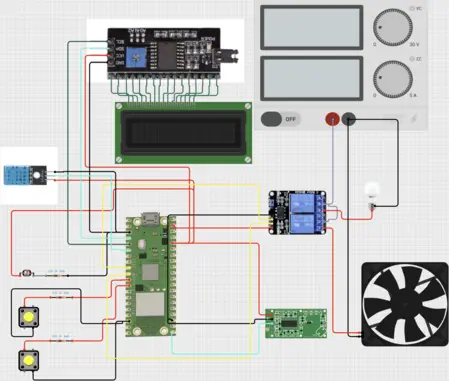
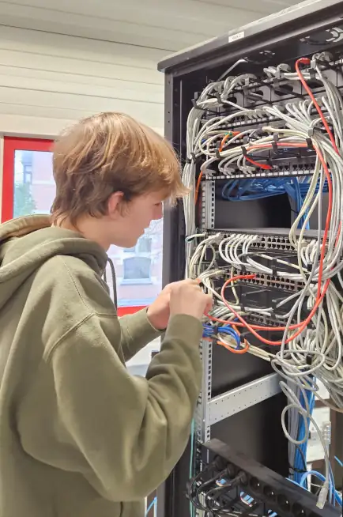
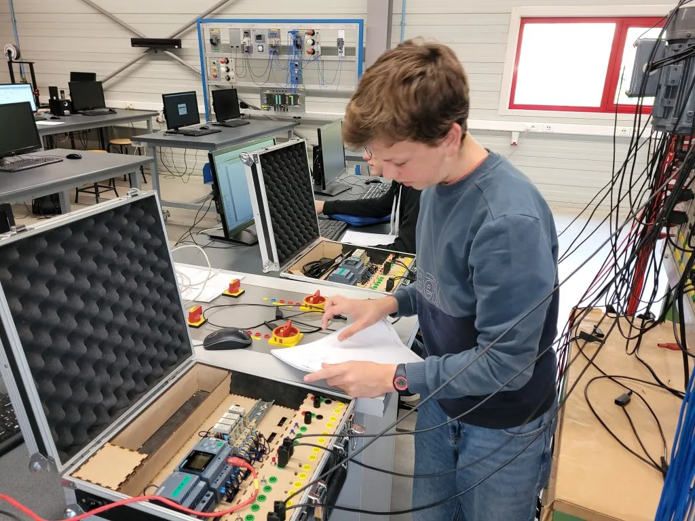

ICT iets voor mij?
Heb je een passie voor ICT en moderne technologie? Dan is deze richting wellicht iets voor jou! Je hoeft geen "nerd" of "genie" te zijn om in 5ICT te kunnen starten! Wat je vooral nodig hebt is interesse en doorzettingsvermogen.
Wil je instromen vanuit een niet technische richting? Ook dat kan!
Voor de specifieke ICT-vakken starten we vanaf nul.
Waarschijnlijk heb je bij de start minder elektrisch inzicht dan sommige medeleerlingen, maar laat dat je niet afschrikken.
Met de juiste inzet en begeleiding van je leerkrachten verwerf je de nodige inzichten snel.
Lessentabel
In onderstaande lessentabel kan je zien welke vakken we aanbieden in deze richting.
Technische vakken
Mogelijk weet je niet zo goed wat de technische vakken inhouden,
daarom geven we bij elk vak een korte toelichting.
Programmeertalen
In het vak Programmeertalen krijg je in 5ICT de basis van gestructureerd programmeren in Python onder de knie. Je maakt kennis met Linux Shellcommando's en leert deze combineren tot kleine scripts. In 6ICT maak je kennis met object geöriënteerde programmeertechnieken en de mogelijkheden van AI.
Microcontrollers
De kennis en vaardigheden die je aanleert in het vak programmeertalen pas je in het vak Microcontrollers meteen toe in leuke projecten, waarbij je zelf oplossingen bouwt - van idee tot werkend resultaat! In eerste instantie werk je met de Raspberry Pi Pico. In functie van grotere projecten schakel je later eventueel over op een klassieke Raspberry Pi. Je verkent de mogelijkheden van IoT-toepassingen. Je leert niet alleen hoe de toestellen functioneren, maar ook hoe je ze kunt aansturen met basiselektronica en sensoren.
In 6ICT sluit je af met een knaller: een eindproject dat je zelf ontwerpt en verdedigt voor een onafhankelijke jury. Hiervoor krijg je ruim de tijd tijdens de lessen, met begeleiding en evaluatie onderweg. Geen stress, wel uitdaging!

Systeem- en netwerkbeheer
In het vak Systeem- en netwerkbeheer mag je al snel een computer demonteren, assembleren en een besturingssysteem installeren. Je leert hoe de verschillende onderdelen samenwerken in een werkend systeem.
Vervolgens leer je de functie van verschillende netwerkapparaten kennen en leer je hoe deze apparaten met elkaar communiceren. De inzichten die je hier verwerft zijn belangrijk om daarna zelf een klein bedrijfsnetwerk op te bouwen, configureren en beveiligen.
In 6ICT installeer je een linux webserver. Je leert de basisknepen van web development en ontwerpt je eigen website over je eindproject. Deze website hosten we op onze eigen webserver en maken we toegankelijk vanop het internet. Cyber security is hierbij een onderwerp die de nodige aandacht verdient.
Ten slotte bouwen we met de bouwstenen die je mee krijgt in de verschillende vakken aan een groot project. We leren een groot probleem systematisch opsplitsen in deelproblemen, die we vervolgens 1 voor 1 aanpakken en combineren tot een werkend geheel. We gebruiken in dit project AI als assistent. Belangrijk hierbij is dat we zelf goed het overzicht moeten bewaren. Wij zijn zelf de architect van ons project! Dit schooljaar zijn we als pilootproject gestart met het opzetten van een eigen EMS.

Elektriciteit
In 5ICT maak je binnen CAD/CAE kort kennis met mechanisch ontwerp. Het accent ligt binnen dit vak echter vooral op het tekenen van elektrische aansluitschema's van industriële installaties.
In Elektriciteit en labo leer je spanningen, stromen en vermogens meten en berekenen in monofasige en driefasige wisselstroomkringen. Je leert over de verschillende elektromagnetische verschijnsels die de werking van elektrische machines verklaren.
In 6ICT maak je binnen Projecten elektriciteit kennis met enkele elektrische machines en leer je deze ook praktisch aansluiten met de nodige aandacht voor veiligheid.
Project engineering praktijk + stage
De elektrische inzichten die je verwerft in andere vakken zal je in Project engineering praktijk praktisch moeten toepassen. Je leert PLC's aansluiten en programmeren. Je leert productieprocessen automatiseren met behulp van PLC's, frequentieregelaars en elektropneumatica. In 6ICT gaan we ook hier vakoverschrijdend te werk. We integreren onze PLC's in een industrieel netwerk en laten ze communiceren met computerprogrammma's die we schrijven in python. Voor de geïnteresseerde leerlingen is het ook zeker mogelijk om automatisering te integreren in het eindproject.
In 6ICT doe je praktische ervaring en soft skills op tijdens een 2 weken durende stage in een bedrijf naar keuze.
